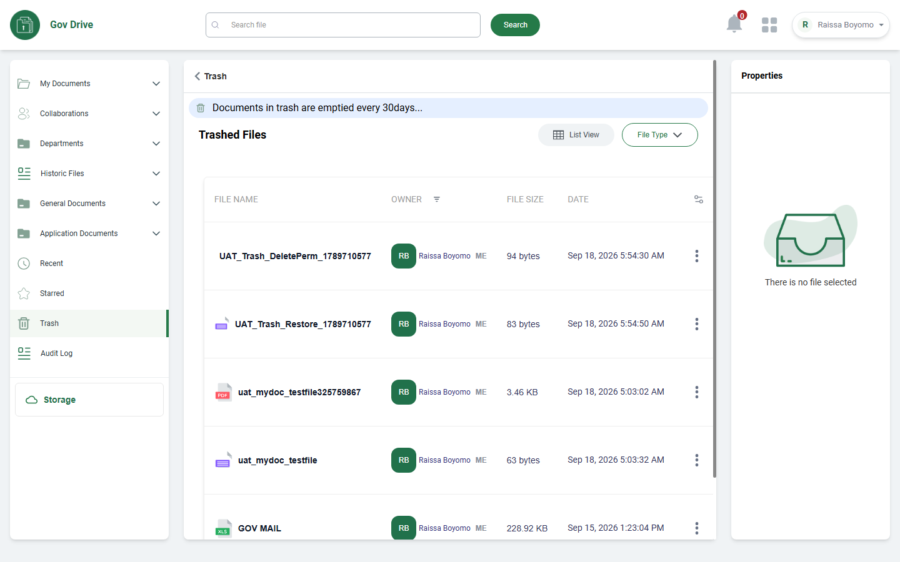
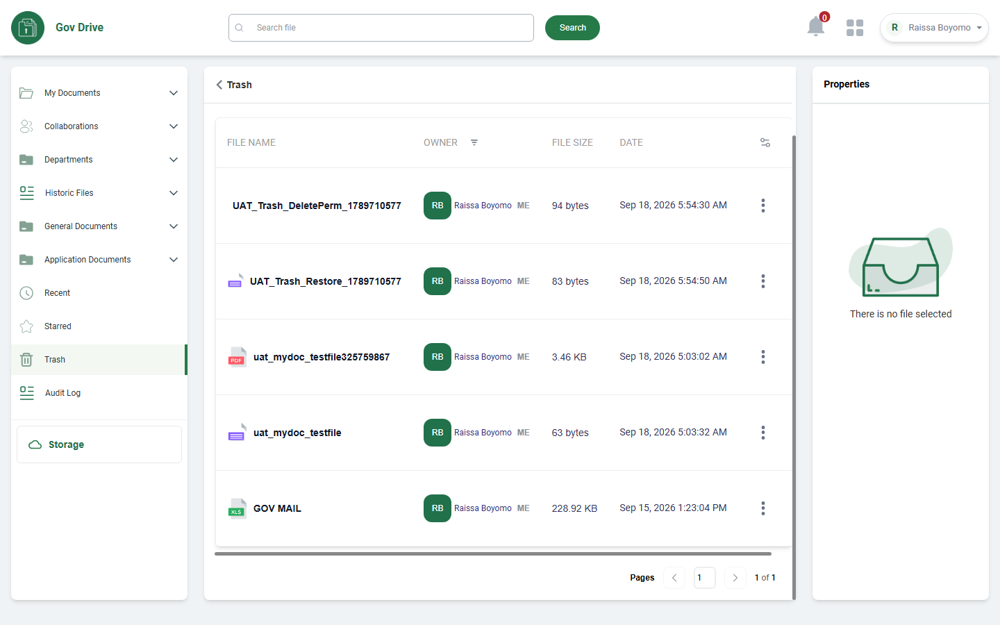
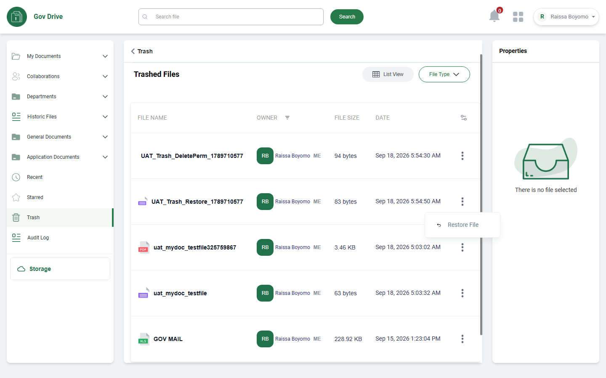
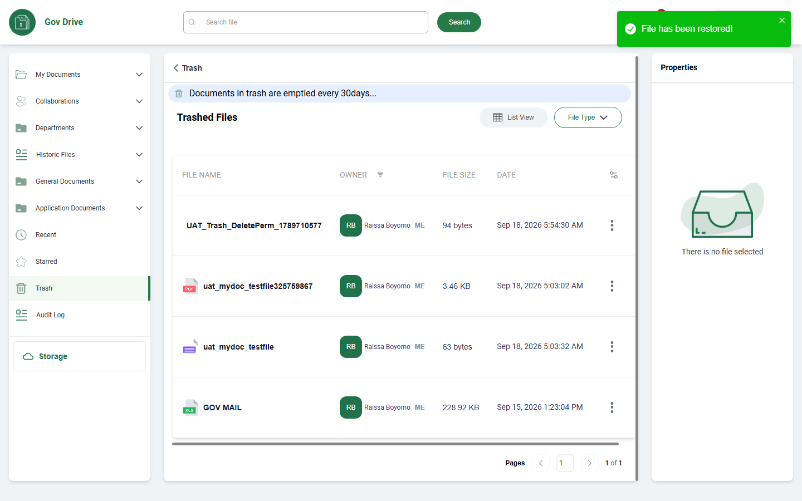
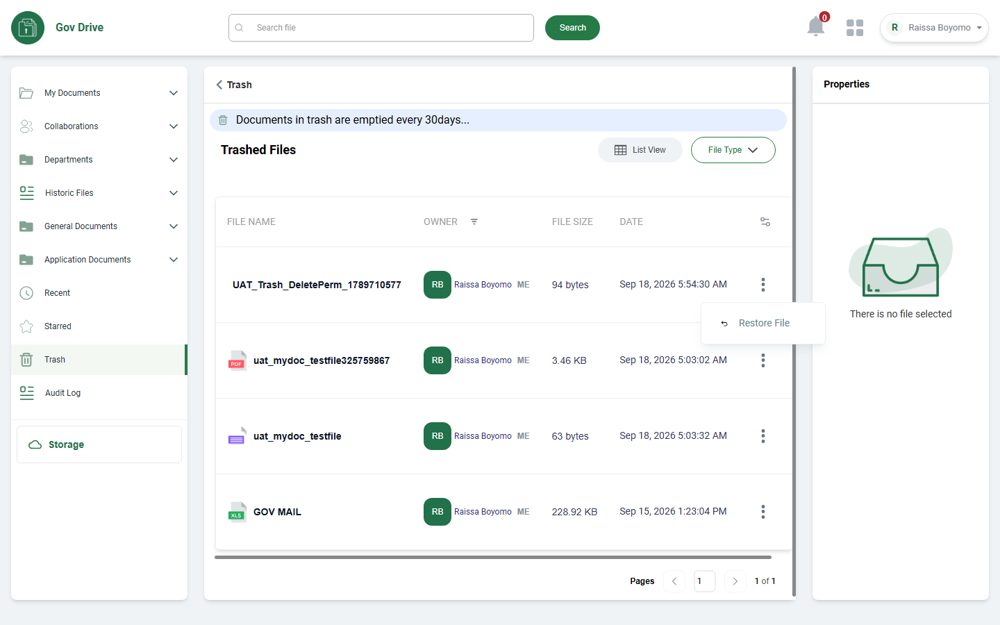
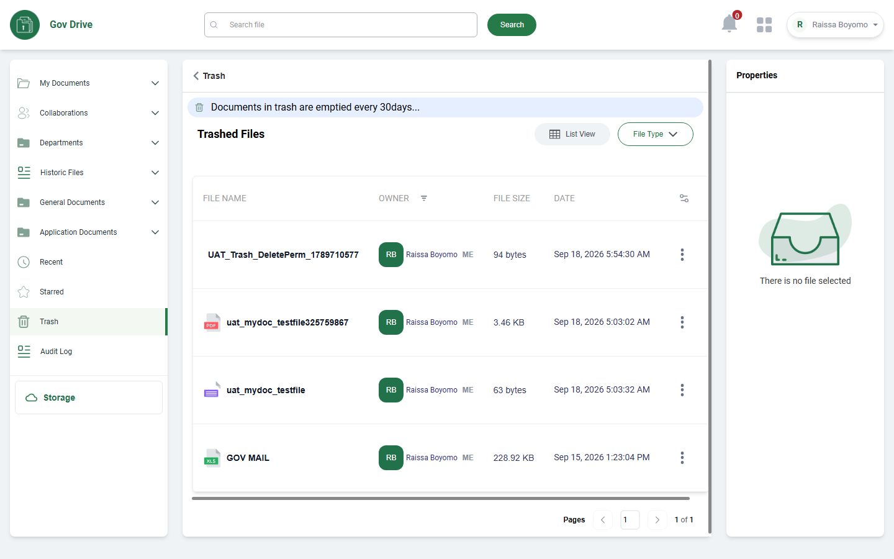
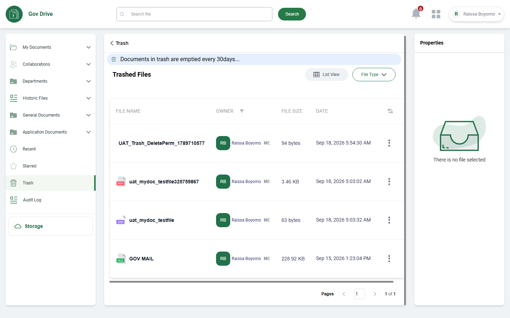
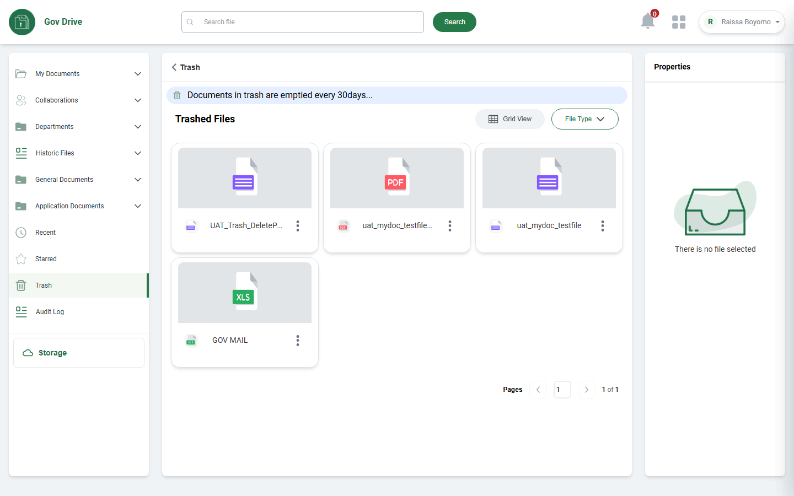
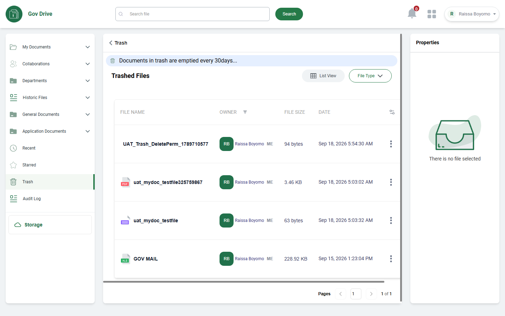

UAT Execution Report: TRASH DOCUMENT Module
Live functional/UI verification of the Trash Document (CDE / Gov Drive) module against test/TrashDocumentTest.md (13 rows). This session covered all 13 script rows 1:1, each with its own freshly captured screenshot, and supersedes the prior shallow pass that reused only 6 screenshots across 10 combined rows. Headline findings: there is no manual "Delete Permanently" action anywhere in the UI (only automatic 30-day retention purge), no global "Empty Trash" button exists, and the "File Type" filter dropdown on the toolbar is rendered but completely non-functional (produces no dropdown, no ARIA state change, nothing in the DOM). Restore, pagination, the retention banner, and the List/Grid view toggle all work correctly.
| Row | Steps to Reproduce | Expected Result | Actual Result (Live Execution) | Deviations & Defect Notes | Status | Screenshot Evidence |
|---|---|---|---|---|---|---|
| 1 | Click on Trash on the side menu | Should display the trash documents |
Clicking "Trash" in the left sidebar navigates to /cde/trash. Sidebar highlights "Trash" with an active green indicator bar, and the "Trashed Files" workspace loads with the retention banner and records table. |
None. |
PASSED |  |
| 2 | Verify the 30-day retention warning banner | Should display "Documents in trash are emptied every 30days..." banner |
Banner renders exactly as expected: a light-blue pill reading "Documents in trash are emptied every 30days..." with a trash-can icon, under the "Trash" breadcrumb header. |
None. |
PASSED |  |
| 3 | Verify the trash folders and files in the table | Should display the trash records with Name, Owner, Size, Date |
Table renders 5 trashed items (2 own throwaway files, 2 carry-over throwaway files from the My Documents session, and pre-existing "GOV MAIL") under FILE NAME, OWNER, FILE SIZE, DATE headers. No folders ever appear in Trash — only files were observed. |
[Deviation]: only files observed, no trashed folders (folders have no delete action, consistent with My Documents finding). |
PASSED (deviation) |  |
| 4 | Verify table pagination controls | Should display pagination (e.g., Pages < 1 > 1 of 1) |
Pagination control renders at bottom-right exactly as scripted: "Pages", left-chevron, page box "1", right-chevron, "1 of 1". |
None. |
PASSED |  |
| Row | Steps to Reproduce | Expected Result | Actual Result (Live Execution) | Deviations & Defect Notes | Status | Screenshot Evidence |
|---|---|---|---|---|---|---|
| 5 | Click on the action button on trashed file | Should display context action menu (e.g. Restore, Delete Permanently) |
Clicking the ⋮ action button opens a floating popover containing only one item: "Restore File" (undo icon). No "Delete Permanently" item exists in this menu. |
[Deviation]: reduced menu vs. script example — direct cause of Rows 7/8 findings. |
PASSED (deviation) |  |
| 6 | Click on restore file option | Should restore the file to its original location |
"File has been restored!" success toast shown; item disappears from Trash immediately; independently confirmed to reappear in My Documents’ root file list (Files (2), including the restored file). |
None. |
PASSED |  |
| 7 | Click on delete permanently option | Should permanently delete the file from storage |
No "Delete Permanently" option exists anywhere. The per-row menu was reopened on the second throwaway file and confirmed via full DOM text dump to contain only "Restore File". No alternative route found. |
[Confirmed defect]: manual permanent-delete action absent from current build. |
NOT IMPLEMENTED |  |
| 8 | Verify empty trash confirmation modal | Should display confirmation warning before permanent deletion |
No global "Empty Trash" button exists on the header toolbar. DOM-wide check for checkboxes and for "empty"/"bulk"/"select all"/"delete all" text returned zero matches. No entry point exists to reach a confirmation modal. |
[Confirmed defect]: no bulk/permanent-delete entry point exists at all. |
NOT IMPLEMENTED |  |
| Row | Steps to Reproduce | Expected Result | Actual Result (Live Execution) | Deviations & Defect Notes | Status | Screenshot Evidence |
|---|---|---|---|---|---|---|
| 9 | Click on properties pane on trashed file | Should display file properties inspector sidebar |
Clicking directly on a trashed file’s name cell does not select the item or populate the Properties panel — remains on default "There is no file selected" state, no visible change. |
[Deviation]: protected/inert state for trashed items. |
PASSED (protected state) |  |
| 10 | Verify file metadata in properties pane | Should display type, size, storage, owner, modified, created timestamps |
Double-click on the same row produced the same inert result: Properties panel unchanged, URL stayed on /cde/trash. No metadata could be displayed for any trashed item this session. |
[Could not verify]: properties pane never activates for trashed items. |
COULD NOT VERIFY |  |
| Row | Steps to Reproduce | Expected Result | Actual Result (Live Execution) | Deviations & Defect Notes | Status | Screenshot Evidence |
|---|---|---|---|---|---|---|
| 11 | Click on view mode toggle (List View / Grid View) | Should toggle between list table and card grid preview format |
Clicking the toggle switches the label to "Grid View" and re-renders the same trashed items as file-type-icon cards (PDF, TXT×2, XLS), each with its own ⋮ menu. Toggling again returns cleanly to table view. |
None. |
PASSED |  |
| 12 | Click on File Type filter dropdown | Should filter trashed items by document classification |
Clicking "File Type" produces no visible dropdown, no new DOM element (scanned for ul/listbox/menu/popover-class elements — zero found), and no aria-expanded change. Button is enabled with pointer-events:auto, so not a CSS/visibility issue. |
[Confirmed defect]: filter control is non-functional in this build. |
CONFIRMED DEFECT |  |
| 13 | End Test | Test session concluded successfully |
UAT execution for the Trash Document module completed successfully on Target 3 (cicodsaasstaging.com / cicodecms), all 13 script rows exercised live with distinct evidence for each. |
None. |
PASSED |  |